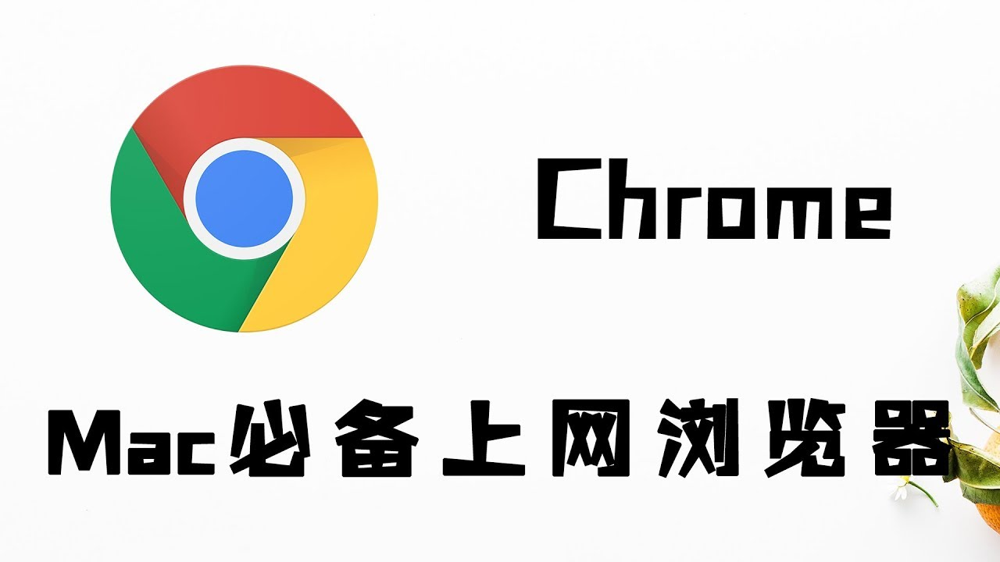

了解各种键盘快捷键，成为 Chrome 使用达人，能够有助于我们节省开发效率和时间，基本可以做到不用使用鼠标。本文是摘录 google chrome 官方文档的内容，能翻墙的朋友可以自己去查看文档。

1. 标签页和窗口快捷键
| 操作 |
快捷键 |
| 打开新窗口 |
⌘ + n |
| 在无痕模式下打开新窗口 |
⌘ + Shift + n |
| 打开新的标签页，并跳转到该标签页 |
⌘ + t |
| 重新打开最后关闭的标签页，并跳转到该标签页 |
⌘ + Shift + t |
| 跳转到下一个打开的标签页 |
⌘ + Option + 向右箭头键 |
| 跳转到上一个打开的标签页 |
⌘ + Option + 向左箭头键 |
| 跳转到特定标签页 |
⌘ + 1 到 ⌘ + 8 |
| 跳转到最后一个标签页 |
⌘ + 9 |
| 打开当前标签页浏览记录中记录的上一个页面 |
⌘ + [ 或 ⌘ + 向左箭头键 |
| 打开当前标签页浏览记录中记录的下一个页面 |
⌘ + ] 或 ⌘ + 向右箭头键 |
| 关闭当前标签页或弹出式窗口 |
⌘ + w |
| 关闭当前窗口 |
⌘ + Shift + w |
| 最小化窗口 |
⌘ + m |
| 隐藏 Google Chrome |
⌘ + h |
| 退出 Google Chrome |
⌘ + q |
2. 功能快捷键
| 操作 |
快捷键 |
| 显示或隐藏书签栏 |
⌘ + Shift + b |
| 打开书签管理器 |
⌘ + Option + b |
| 在新标签页中打开“设置”页 |
⌘ + , |
| 在新标签页中打开“历史记录”页 |
⌘ + y |
| 在新标签页中打开“下载内容”页 |
⌘ + Shift + j |
| 打开查找栏搜索当前网页 |
⌘ + f |
| 跳转到与查找栏中搜索字词相匹配的下一条内容 |
⌘ + g |
| 跳转到与查找栏中搜索字词相匹配的上一条内容 |
⌘ + Shift + g |
| 打开查找栏后，搜索选定文本 |
⌘ + e |
| 打开“开发者工具” |
⌘ + Option + i |
| 打开“清除浏览数据”选项 |
⌘ + Shift + Delete |
| 使用其他帐号登录或以访客身份浏览 |
⌘ + Shift + m |
3. 地址栏快捷键
在地址栏中可使用以下快捷键
| 操作 |
快捷键 |
| 使用默认搜索引擎进行搜索 |
输入搜索字词并按 Enter 键 |
| 使用其他搜索引擎进行搜索 |
输入搜索引擎名称，然后按** Tab** 键 |
为网站名称添加 www. 和 .com，并在当前标签页中打开该网站 |
输入网站名称并按 Control + Enter 键 |
为网站名称添加 www. 和 .com，并在新标签页中打开该网站 |
输入网站名称并按 Control + Shift + Enter 键 |
| 在新的后台标签页中打开网站 |
输入网址并按 ⌘ + Enter 键 |
| 跳转到地址栏 |
⌘ + l |
| 从地址栏中移除联想查询内容 |
按向下箭头键以突出显示相应内容，然后按 Shift + fn + Delete 键 |
4. 网页快捷键
| 操作 |
快捷键 |
| 打开选项以打印当前网页 |
⌘ + p |
| 打开选项以保存当前网页 |
⌘ + s |
| 打开“页面设置”对话框 |
⌘ + Option + p |
| 重新加载当前网页（忽略缓存的内容） |
⌘ + Shift + r |
| 停止加载网页 |
Esc |
| 浏览下一个可点击项 |
Tab |
| 浏览上一个可点击项 |
Shift + Tab |
| 使用 Google Chrome 打开计算机中的文件 |
按住 ⌘ + o 键并选择文件 |
| 显示当前网页的 HTML 源代码（不可修改） |
⌘ + Option + u |
| 打开 JavaScript 控制台 |
⌘ + Option + j |
| 将当前网页保存为书签 |
⌘ + d |
| 将所有打开的标签页以书签的形式保存在新文件夹中 |
⌘ + Shift + d |
| 开启或关闭全屏模式 |
⌘ + Ctrl + f |
| 放大网页上的所有内容 |
⌘ 和 + |
| 缩小网页上的所有内容 |
⌘ 和 - |
| 将网页上的所有内容恢复到默认大小 |
⌘ + 0 |
| 向下滚动网页，一次一个屏幕 |
空格键 |
| 向上滚动网页，一次一个屏幕 |
Shift + 空格键 |
| 搜索网络 |
⌘ + Option + f |
| 将光标移到文本字段中的上一个字词前面 |
Option + 向左箭头键 |
| 将光标移到文本字段中的上一个字词后面 |
Option + 向右箭头键 |
| 删除文本字段中的上一个字词 |
Option + Delete |
| 在当前标签页中打开主页 |
⌘ + Shift + h |
5. 鼠标快捷键
以下快捷键要求您使用鼠标
| 操作 |
快捷键 |
| 在当前标签页中打开链接（仅限鼠标） |
将链接拖到标签页中 |
| 在新的后台标签页中打开链接 |
按住 ⌘ 键的同时点击链接 |
| 打开链接，并跳转到该链接 |
按住 ⌘ + Shift 键的同时点击链接 |
| 打开链接，并跳转到该链接（仅使用鼠标） |
将链接拖到标签栏的空白区域 |
| 在新窗口中打开链接 |
按住 Shift 键的同时点击链接 |
| 在新窗口中打开标签页（仅使用鼠标） |
将标签页拖出标签栏 |
| 将标签页移至当前窗口（仅限鼠标） |
将标签页拖到现有窗口中 |
| 将标签页移回其原始位置 |
拖动标签页的同时按 Esc |
| 将当前网页保存为书签 |
将相应网址拖动到书签栏中 |
| 下载链接目标 |
按住 Option 键的同时点击链接 |
| 显示浏览记录 |
右键点击“后退”箭头  或“前进”箭头 或“前进”箭头  ，或者点击（按住鼠标按键别松手）“后退”箭头 或“前进”箭头 ，或者点击（按住鼠标按键别松手）“后退”箭头 或“前进”箭头 |
| 将窗口高度最大化 |
双击标签栏的空白区域 |